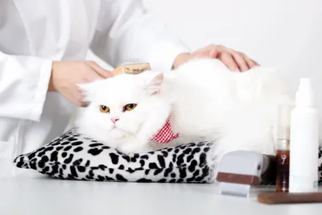
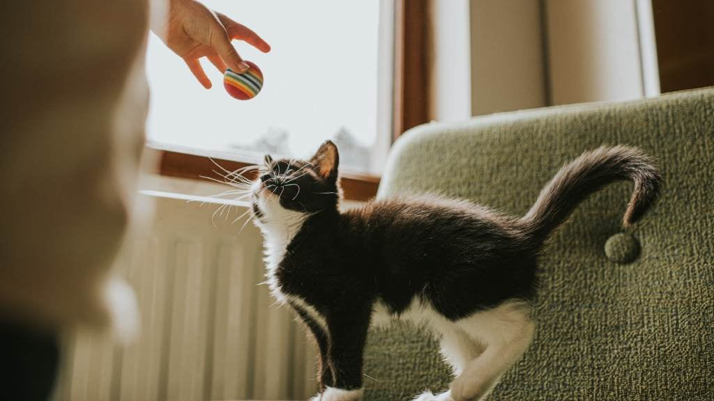
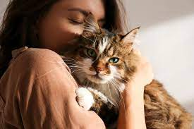

Taking good care of your cat helps them live a long, happy, and healthy life. Below are
some essential cat care tips for beginners and cat lovers.

Proper Nutition
- Provide high-quality cat food suitable for your cat’s age.
- Always ensure fresh, clean water is available.
- Avoid human foods like chocolate, onions, and garlic.
- Control portions to prevent obesity.
Grooming & Hygiene
- Brush your cat regularly to reduce shedding and hairballs.
- Trim nails carefully every few weeks.
- Clean ears gently and check for dirt or redness.
- Long-haired cats need more frequent grooming.


Safe & Comfortable Living Space
- Keep your home safe and free from small dangerous objects.
- Provide a cozy bed and a quiet place for rest.
- Cats enjoy vertical spaces like shelves or cat trees.
- Keep toxic plants away from your cat.
Exercise & Playtime
- Play with your cat daily using toys like feather wands or balls.
- Interactive play keeps cats active and mentally stimulated.
- Rotate toys to keep them interesting.
- Playtime strengthens the bond between you and your cat.


Health & Vet Care
- Schedule regular vet checkups.
- Keep vaccinations up to date.
- Watch for changes in behavior, appetite, or litter box habits.
- Spaying or neutering improves long-term health.
Love, Attention & Mental Health
- Spend quality time with your cat every day.
- Respect their boundaries – cats like independence.
- Provide scratching posts to reduce stress.
- A happy cat is one that feels safe and loved.
